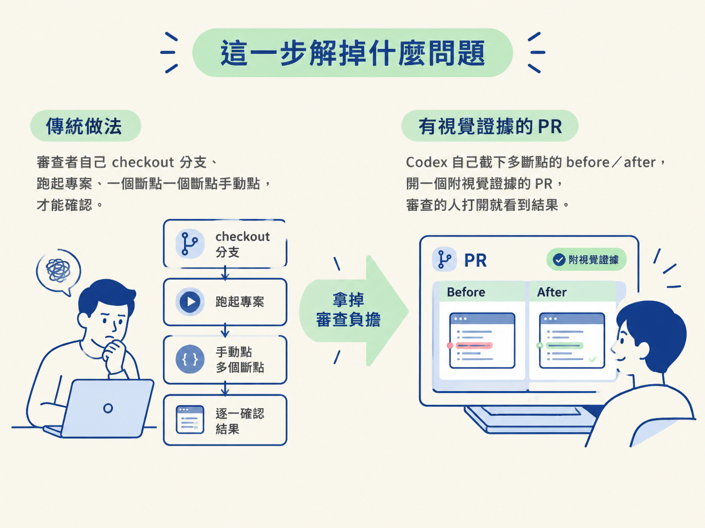
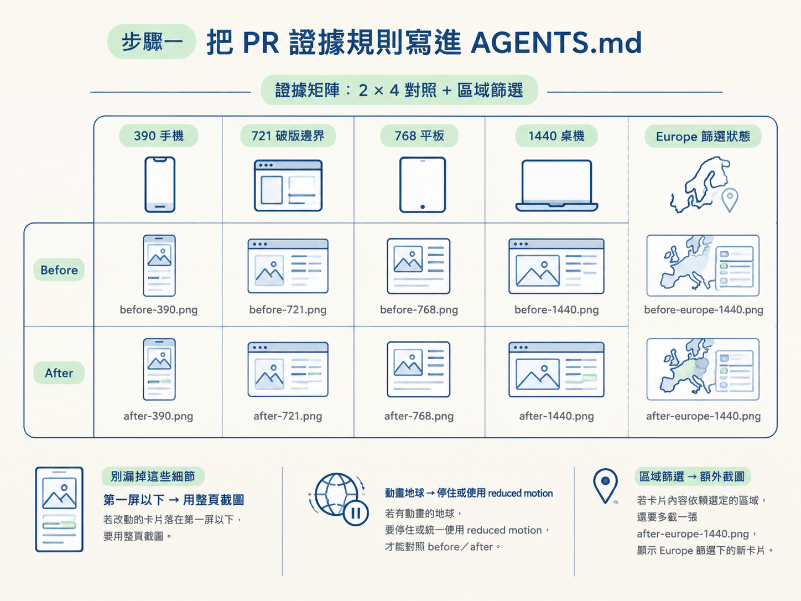
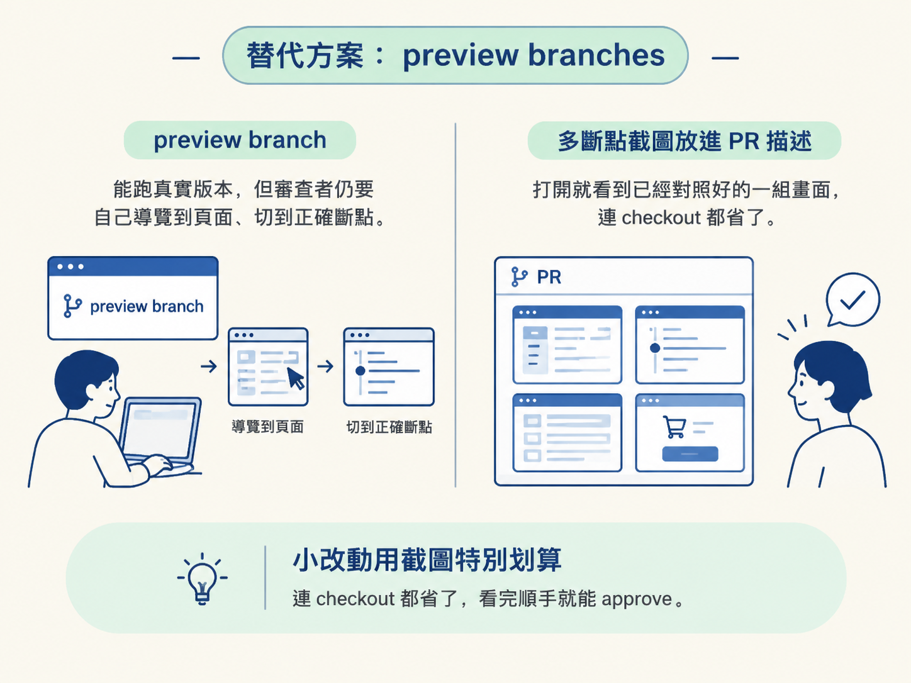

UI 的改動很難只靠讀 diff 判斷對不對。一張新卡片，光看程式碼看不出它在 390 像素的手機上會不會溢出、深色模式的對比夠不夠、跟篩選連動得正不正常。傳統上，審查的人得自己 checkout 你的分支、把專案跑起來、一個斷點一個斷點慢慢點，才能確認一件事。
這一步要做的，就是把這個負擔拿掉：讓 Codex 自己截下多斷點的 before／after，開一個附視覺證據的 PR，審查的人打開就看到結果。

AGENTS.md，Codex 會讀它當作工作規則。做完你會拿到：一個由 Codex 開好、標題格式正確、內嵌多斷點 before／after 截圖的 PR。你要親手做的只有兩件事：把規則寫進 AGENTS.md，以及在送出前預覽確認。
先講目標：這條規則定義完，Codex 就知道該在什麼時候截、截哪些寬度、圖檔放哪裡、怎麼嵌進 PR。就像前面每一個動作一樣，這件事應該由 repo 驅動，而不是每次在 prompt 裡重講一遍。
課程專案的 user-insights AGENTS.md 裡，專門有一段在講這件事：
## Pull-request visual evidence
- Capture the before screenshots before modifying a visible feature or responsive breakpoint. Capture the after screenshots on the same route, at the same viewport, and in the same filter state.
- For a screenshot-rich UI pull request, include matched evidence at `390px` mobile, `721px` failing-breakpoint edge, `768px` tablet, and `1440px` desktop. Include `720px` as an additional regression check when changing the existing mobile breakpoint.
- Keep screenshot names and locations predictable: `docs/visual-evidence/<change-slug>/before-390.png`, `after-390.png`, `before-721.png`, `after-721.png`, `before-768.png`, `after-768.png`, `before-1440.png`, and `after-1440.png`.
- For a combined feature-and-fix demonstration, separately preserve `before-card-1440.png` and `after-card-1440.png` before starting responsive debugging. Do not overwrite feature screenshots with breakpoint-fix screenshots.
- Use full-page screenshots when the changed card falls below the first viewport. Pause the animated globe or use reduced motion consistently so before-and-after images are comparable.
- When a card depends on the selected region, also capture `after-europe-1440.png` showing the `Europe` filter and the updated card.
- Embed the actual screenshots in the pull-request description using a mobile, breakpoint, tablet, and desktop before/after Markdown table. Use the actual GitHub repository and head-branch image URLs; do not leave local filesystem links, temporary paths, or placeholder image URLs in a published pull request.
- Commit screenshot evidence only when the user has requested a visual pull request; otherwise keep temporary browser captures outside the repository.逐條讀，它在要求四件事。
docs/visual-evidence/<change-slug>/ 底下，命名固定成 before-390.png、after-390.png 這種形式。另外還有兩條容易漏的細節。若改動的卡片落在第一屏以下，要用整頁截圖；動畫的地球要停住或統一使用 reduced motion，否則 before／after 兩張圖根本沒辦法對照。若卡片內容依賴選定的區域，還要多截一張 after-europe-1440.png，顯示 Europe 篩選下的新卡片。

同一份 AGENTS.md 的 UI 驗證區塊也告訴你要檢查什麼：console 錯誤、缺漏資源、裁切、圖表尺寸、水平溢出，並驗證 document.documentElement.scrollWidth <= document.documentElement.clientWidth。改動前與修好後，各在同一個寬度檢查一次。
規則寫好之後，截圖這件事不必你自己來。課程示範裡，Codex 在跑功能的那十分鐘內就自己截了圖來檢查；接著因為 AGENTS.md 的 PR 區塊要求要有截圖，它又自己產出 before／after 的視覺證據。
那次是一個「導覽列溢出」的修正。Codex 把不同斷點下的樣子都截了下來，深色／淺色主題的還原也一併處理好。
換句話說，你不用手動開瀏覽器、一個斷點一個斷點慢慢調寬度去截，而是把「要截什麼、截在哪、怎麼命名」寫成規則，剩下交給 Codex。這也是這一整節反覆出現的同一個模式：把知識寫進 repo，動作就會自動化。
證據準備好就可以開 PR 了，Codex 能自己開，你不必手動慢慢填。PR 的規矩同樣寫在 AGENTS.md 裡：
## Pull requests
- Use `<type>(<area>): <imperative summary>` for commit subjects and pull-request titles.
- Prefer the narrowest truthful scope, such as `feat(dashboard): add active engagement card` or `fix(navigation): prevent tablet overflow`.
- Follow `.github/pull_request_template.md`.
- Include the user-visible summary, motivation, actual validation commands, and before-and-after visual evidence.
- When one pull request includes both the dashboard feature and its responsive correction, use a truthful combined title such as `feat(dashboard): add active engagement and fix tablet overflow`.
- Upload each screenshot through the GitHub pull-request editor so GitHub creates a stable `https://github.com/user-attachments/assets/...` URL. Embed those uploaded assets inline in the mobile, breakpoint, tablet, and desktop before/after table with `<img>` tags; do not use private-repository `raw.githubusercontent.com` URLs, repository blob links, local filesystem links, temporary paths, or placeholder image URLs.
- Preview the pull-request body before saving and verify that every screenshot renders inline.
- Open a ready-for-review pull request unless the user explicitly requests a draft.
- After opening a pull request, verify its actual URL, body, embedded image links, and available checks. Report any pending or failing checks accurately.
- Do not merge without explicit authorization and the required approvals.這裡有幾個容易踩的點，先標出來。
<type>(<area>): <imperative summary>，範圍要窄而誠實。是加卡片就寫 feat(dashboard): add active engagement card，是修導覽溢出就寫 fix(navigation): prevent tablet overflow，不要用一個籠統的大標題蓋住兩種不同性質的改動。若一個 PR 同時含功能與修正，就用誠實的合併標題，例如 feat(dashboard): add active engagement and fix tablet overflow。https://github.com/user-attachments/assets/... 網址。不能貼你電腦上的檔案路徑，不能貼私有 repo 的 raw.githubusercontent.com 連結，也不能留佔位圖片。課程示範裡，Codex 就是照著這套規則自己開出了一個附視覺證據的 PR，全程沒有人特別交代「要附截圖」。
視覺截圖不是唯一的路。示範裡也提到，如果你的服務商支援 preview branch，可以直接打開預覽分支看結果。
但兩者有差別。preview branch 雖然能跑起真實版本，審查的人還是得自己導覽到那個頁面、切到正確的斷點。截圖則是把「已經對照好的一組畫面」直接放進 PR 描述，打開就看到。小改動用截圖特別划算，連 checkout 都省了，看完順手就能 approve。

要開一個附視覺證據的 PR，先在 AGENTS.md 的 PR 區塊定義規則：before 要在改動前截、after 要在同一路由、同一寬度、同一篩選狀態截，涵蓋 390／721／768／1440，動到手機斷點就補 720，檔名與位置固定，嵌入時用 GitHub 上傳後的穩定網址。規則寫好後，Codex 會自己截圖、自己開 PR；你要做的是遵守標題格式、維持窄而誠實的範圍，並在送出前預覽確認圖片都能顯示。
驗證方式很直接：打開那個 PR，你應該看得到一份內嵌了 mobile／breakpoint／tablet／desktop before-after 對照表的描述，每張圖都正常渲染，標題是 <type>(<area>): ... 的格式，checks 狀態也如實呈現。
到這裡，「在既有 codebase 加功能並開 PR」這條流程就走完了：理解貢獻契約、實際探索並下 prompt、看懂功能貼合的傳導鏈、決定指引的顆粒度，最後附上視覺證據開出 PR。至於「模型自審會有什麼盲點、該不該讓第二個模型覆核」，屬於 code review 那條線，之後的節點會接著談。